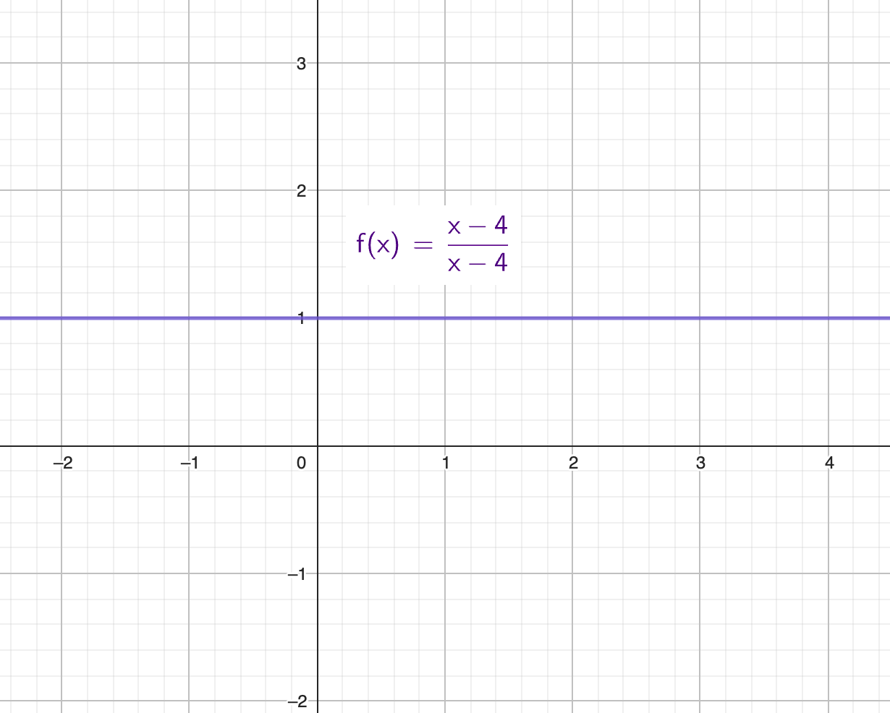
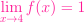
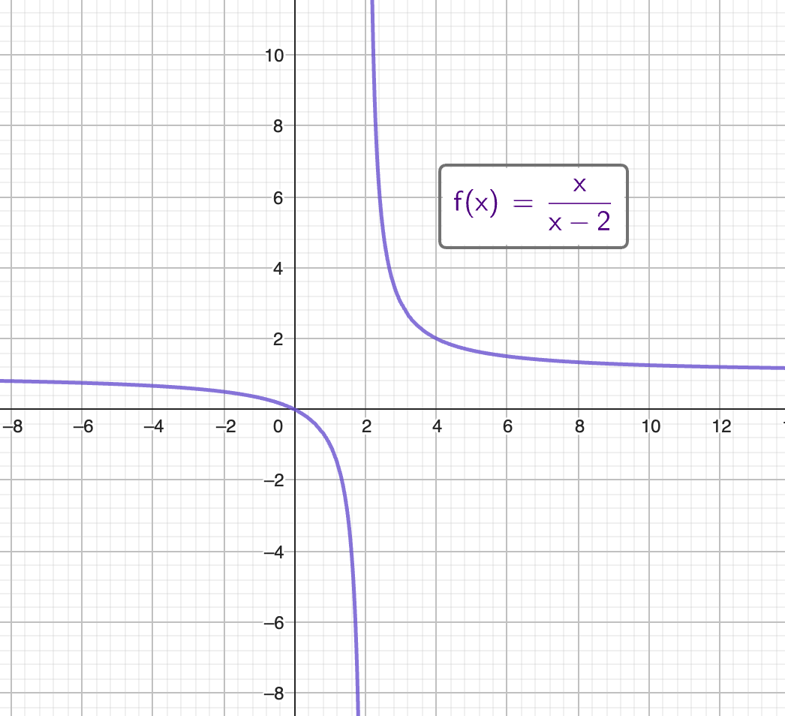

It’s been a long (loooooo-oooo-oooong) time since I studied mathematics. And with all the rage that is “AI” and machine learning (ML), I thought now would be a good time. I did an initial venture into ML but quickly realized that I do not know a knob from a steering wheel. That was when the YouTube Algo-monster figured I should look at a clip by AssemblyAI: “How I would learn Machine Learning (if I could start over)”. And it was just what I needed to hear. So here I am, learning ML by first investing time in… MATH!
Here are 3 points of why some mathematical skills would be an advantage to have going into ML:
Calculus is used for optimization algorithms - a group of algorithms that try to find the best solution to a problem.
Linear Algebra deals with linear equations and matrices. In ML this is used in data preprocessing, feature extraction and dimensionality reduction.
Probability and Statistics are used for modeling uncertainty and making predictions.
This will be a series of articles where I delve into some of these Mathematical concepts. Starting with Calculus’s core concept: Limits!
Limits
The essence to defining continuity, derivatives, and integrals comes down to limits. We will definitely see limits when we want to look at derivatives - or the rate of a change at a specific point. But even before we step into that realm, consider the function
f(x)=(x-4)/(x-4):

From a cursory glance, we see that the function will equal to 1, for whatever value of x. Well, almost. When we have x=4 we will have a situation.
This would mean that we would have 0 divided by 0 which is an undefined concept. We can’t divide anything with 0. But as x approaches 4 we see that we have 1. With x really really close to that undefined, such as 3.9999, we see that we still have y = 1. On the other side we see that y(4.0001) = 1. While x = 4 is undefined for our function, we can take the limit of f at x = 4 and find that it is 1. We will have this expression:

It’s like magic! But keep in mind, this does not say that y(4) = 1, rather it is saying that the equation will behave in such a way that y will be 1 as we are moving very very close to x = 4.
But this magic has its limits! If we find that as we increase x and moving closer to a point has one value, and decrease x to move closer to that same point from the other directions is moving us closer to a different value, then we have a situation where we can’t apply limits to find the value as we are moving closer to x. Consider the function f(x)=x/(x - 2):

As we increase x from 1 and get closer to 2, we see that y will decrease dramatically. From the opposite side we see that when we decrease x from 3 and get closer to 2, we see that y will increase dramatically. In this example we do not have a limit for when x gets closer to 2, the limit does not exist. This actually showcases 2 ways that a limit does not exist:
- As we get closer to 2, the y-value moves in a different direction depending on the direction from which we approach 2.
- As we get closer to 2, the y-value is unbounded.
One-sided limits
We have described how a limit does not exist when the value of y approaches different values depending on the direction we are approaching a value of x from. We can however give ourselves more leeway by describing a one-sided limit. Take this example, a function would have the limit of x approach 4 when we move closer to x = 2. On the other side the x might approach -2. This give us the following expressions:
But as we have described earlier, the two-sided limit does not exist when we approach different values from the two directions.
The limit when the function’s value do exist
The function f(x)=x^2+3 is defined when x=2. This does not stop us from looking for its limit. In this case, we arrive at the limit approaching the same value as the defined value for f(x). But this does not mean that the limit necessarily will approach the defined value.
Conclusion confusion
So there you have it! We’ve seen how limits can help us approach undefined positions in a function using different graphs. This is a really important concept in calculus and mathematical analysis, and it’s also relevant to machine learning. By understanding the basics of limits, we can better understand the math behind machine learning and its optimization algorithms. We hope you found this article helpful and that it encourages you to learn more about this fascinating topic!
Why did the limit go to infinity?
To get away from the derivative